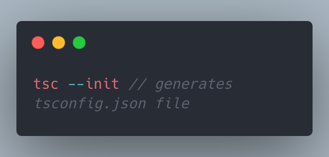

What is Typescript ?
Why should we use it ?
How can we utilize it in a best way ?
Typescript compiler utility

const empName = 'ABC'; // type inference
const empName: string = 'ABC';
const age = 23; // type inference
const age: number = 23;
const isActive = true; // type inference
const isActive: boolean = true;
enum ErrorLevel{
error,
warning,
info,
debug
};
//error = 0, warning = 1, info = 2, debug = 3;
enum ErrorLevel{
error=2,
warning,
info,
debug
};
//error = 2, warning = 3, info = 4, debug = 5;
enum ErrorLevel{
error=2,
warning,
info=5,
debug
};
//error = 2, warning = 3, info = 5, debug = 6;
enum ErrorLevel{
error=2,
warning,
info='A',
debug
};
const userReponse: [boolean, string] = [true, 'success'];
const [firstName, setFirstName] = useState('Dylan');
//literal
let address: 'fulladdress' | 'address';
//type alias
type userAddress = ('fulladdress' | 'address')
//function
function add(x: number, y: number): number {
return x + y;
}
const printOutput = (value: number): void => {
console.log(`output is ${value}`)
}
let empName;
let empName:any;
let empName:any = 'ABC';
//typeof empName
let empName; // undefined
let empName:any; // undefined
let empName:any = 'ABC'; // string
let empName: unknown;
empName = 'ABC' //string
empName = 23; // number
let personName: string = empName; // unknown is not assignable to string
let empName: any = 23;
let personName: string = empName; // this will allow, so never use any
function error(message: string): never {
throw new Error(message);
}
type TOptions = { basic: TBasicOptions; advanced: never } | { basic: never; advanced: TAdvancedOptions };
const employee = {
name: 'ABC',
age: 34
}
console.log(employee.name)
console.log(employee.project)
// property project does not exist on type '{name: string: age: number}'
const employee: object = {
name: 'ABC',
age: 34
}
console.log(employee.name)
// property name does not exist on type 'object'
const projectInfo: Record <string, number|string> = {
id: 1,
name: 'Project1',
status: 'active'
}
type Key = 'id' | 'name' | 'status';
type Val = number|string;
const projectInfo: Record<Key, Val> = {
id: 1,
name: 'ABC',
status: 'active'
}
// typeCast
document.getElementById('user-input') as HTMLInputElement
<HTMLInputElement>document.getElementById('user-input')
//Type Guards
type employee = {
name: string,
age: number
}
const e1: employee = { ... };
if('name' in e1) { ... }
type abc = emp & admin //Type intersection
type abc = emp | admin //Type union
type Employee = {
id: number,
name: string,
age: number
}
//getEmployeeData () >>> receiving employee details as empData
const currentEmployeeData: Employee = {};
if(empData.age > 35) {
currentEmployeeData.id = empData.id,
currentEmployeeData.name = 'Mr.' + empData.name;
currentEmployeeData.age = empData.age
}
//making all the properties optional is one of the option.
type Employee = {
id: number,
name: string,
age: number
}
//getEmployeeData () >>> receiving emp details as empData
const currentEmployeeData: Partial<Employee> = {};
if(empData.age > 35) {
currentEmployeeData.id = empData.id,
currentEmployeeData.name = 'Mr.' + empData.name;
currentEmployeeData.age = empData.age
}
console.log((currentEmployeeData as Employee).age);
class Rectangle {
height: number;
width: number;
constructor(height, width) {
this.height = height;
this.width = width;
}
}
class Rectangle {
constructor(public height,public width) {}
}
class Rectangle {
constructor(public height,public width) {}
getArea(): void {
return this.height * this.width
}
}
interface Animal {
name: string
}
interface Bear extends Animal {
honey: boolean
}
const bear = getBear()
//{'id1': 'ABC', 'id2': 'XYZ'}
interface ErrorController {
[prop: string]: string;
}
A generic type is a type which is connected to other type, but flexible about what other type is.
E.g. we have Array ,promises which are dealing with other types.
const projectIds = ['prjId1', 'prjId2', 'prjId3'] //type inference >>> string[]
const projectIds: string[] = ['prjId1', 'prjId2', 'prjId3']
const projectIds: Array<string> = ['prjId1', 'prjId2', 'prjId3']
const myPromise: Promise<string> = new Promise((resolve, reject) => {
setTimeout(() => {
resolve('This is done !!!')
}, 1000)
});
function merge(obj1: Object, obj2: Object) {
return Object.assign(obj1, obj2);
}
const mergeObj = ({name: 'ABC', age: 30}, {age: 45})
console.log(mergeObj.age) // ts error
function merge<T,U>(obj1: T, obj2: U) {
return Object.assign(obj1, obj2);
}
const mergeObj = ({name: 'ABC', age: 30}, {age: 45})
console.log(mergeObj.age) // 45
//typeof mergeObj T & U
type Person = {
name: string,
age: number
}
function merge<T,U>(obj1: T extends Person, obj2: U) {
return Object.assign(obj1, obj2);
}
const employees = {
'empId1': {
name: 'ABC',
age: 33
},
'empId2': {
name: 'XYZ',
age: 35
}
}
function merge<T,U>(obj1: T, empId: U extends keyof T) {
return getFilteredData(obj1, empId);
}
const emplyeeData = {
'id1': {
name: 'ABC',
age: 23
},
'id2': {
name: 'XYZ',
age: 24
}
}
const firstEmp = getEmpData(emplyeeData, 'id1');
function getEmpData(empData,id) {
return empData[id]
}
type empDetail = {
name: string;
age: number
}
type empId = {
[prop: string]: empDetail
}
const firstEmp = getEmpData(emplyeeData, 'id1');
function getEmpData<T extends empId, U extends keyof T>(empData: T, id: U) {
return empData[id]
}
console.log(firstEmp)
class Employee {
static gradYear = 2023;
constructor() {
// console.log(this.gradYear)
console.log(Employee.gradYear)
}
getEmployeeDetails(emp: string[], empId: number) {
return emp[empId]
}
static getResult(result: any, year: string) {
return result[year];
}
}
console.log(Employee.getResult('2023'))
interface EmployeeDetails {
name: string,
empId: number | string
}
abstract class Employee {
protected employees: EmployeeDetails[] = []
abstract employeeOnboarding(name: string): void;
abstract createEmployee(name: string, empId: number| string): void;
}
class CasualEmployee extends Employee {
employeeOnboarding(name: string) {
console.log(`Welcome to the Org : ${name}`);
}
createEmployee(name: string, empId: number): void {
this.employees.push({
name,
empId
})
}
}
class Contractors extends Employee {
employeeOnboarding(name: string) {
console.log(`Welcome ${name}!! Be ready for the exciting work !!! `);
}
createEmployee(name: string, empId: string): void {
this.employees.push({
name,
empId
})
}
}
const e1 = new CasualEmployee();
e1.createEmployee('ABC', 123);
const e2 = new Contractors();
e2.createEmployee('XYZ', '123')
e1.employeeOnboarding('ABC');
// Welcome to the Org : ABC
e2.employeeOnboarding('XYZ');
// Welcome XYZ!! Be ready for the exciting work !!!
class DBConnection {
private static dbInstance:DBConnection
private constructor(connectionString: string) {
//mongodb.createConnection(connectionString);
}
static getDBInstance() {
if(DBConnection.dbInstance) {
return this.dbInstance
}
this.dbInstance = new DBConnection(`mongodb://mymongodb.server.com:35036/mydb`);
}
}
const db = DBConnection.getDBInstance();
function Logger(constructor: Function) {
console.log(`Logs from Class Decorator`);
}
@Logger
class Employee {
constructor() {
console.log(`Hello !!! Good Morning !!!`);
}
}
// const emp1 = new Employee();
function Logger(logString: string) {
return function(constructor: any) {
const emp1 = new constructor();
console.log(`From the tower of Hanoi !!! ${emp1.name}`)
}
}
@Logger('Class started')
class Employee {
name = 'ABC';
constructor() {}
}
function propertyDecorator(target: any, propertyName: string) {}
function accessorDecorator(target: any, name: string, descriptor: PropertyDescriptor) {}
function methodDecorator(target: any, name: string, descriptor: PropertyDescriptor) {}
function parameterDecorator(target: any, name: string, position: number) {}
class Employee {
@propertyDecorator
empName: string;
_salary: number;
@accessorDecorator
set salary(val: number){
if(val > 0) this._salary = val;
}
constructor(n: string, s: number) {
this.empName = n;
this._salary = s;
}
@methodDecorator
getTaxImplication(@parameterDecorator taxPercentage: number) {
return this.salary * taxPercentage / 100
}
getEmployeeName() {
return this.empName
}
}
function toUpper() {
return function <T extends { new(...args: any[]): { empName: string, _salary: number } } > (orgConstructor: T) {
return class extends orgConstructor {
constructor(...args: any[]) {
super(...args);
// console.log(this.empName);
// console.log(this._salary);
for (const val in args) {
this.empName = this.empName.toUpperCase();
}
}
}
}
}
@toUpper()
class Employee {
@propertyDecorator
empName: string;
_salary: number;
@accessorDecorator
set salary(val: number){
if(val > 0) this._salary = val;
}
constructor(n: string, s: number) {
this.empName = n;
this._salary = s;
}
@methodDecorator
getTaxImplication(@parameterDecorator taxPercentage: number) {
return this.salary * taxPercentage / 100
}
getEmployeeName() {
return this.empName
}
}
const config: { [input: string]: string[] } = {};
const addValidator = (input: string, type: string) => {
config[input] = config[input]
? [...config[input], type]
: [type];
}
const Required = (_: any, input: string) => addValidator(input, 'required');
const Maxlength = (_: any, input: string) => addValidator(input, 'maxlength');
const Positive = (_: any, input: string) => addValidator(input, 'positive');
const validate = (course: any) =>
Object.entries(config).every(([input, types]) =>
types.every(type =>
type === 'required' && course[input] ||
type === 'positive' && course[input] > 0 ||
type === 'maxlength' && course[input].length < 5
)
)
class Course {
@Required @Maxlength title: string;
@Required @Positive price: number;
constructor(title: string, price: number) {
this.title = title;
this.price = price;
}
}